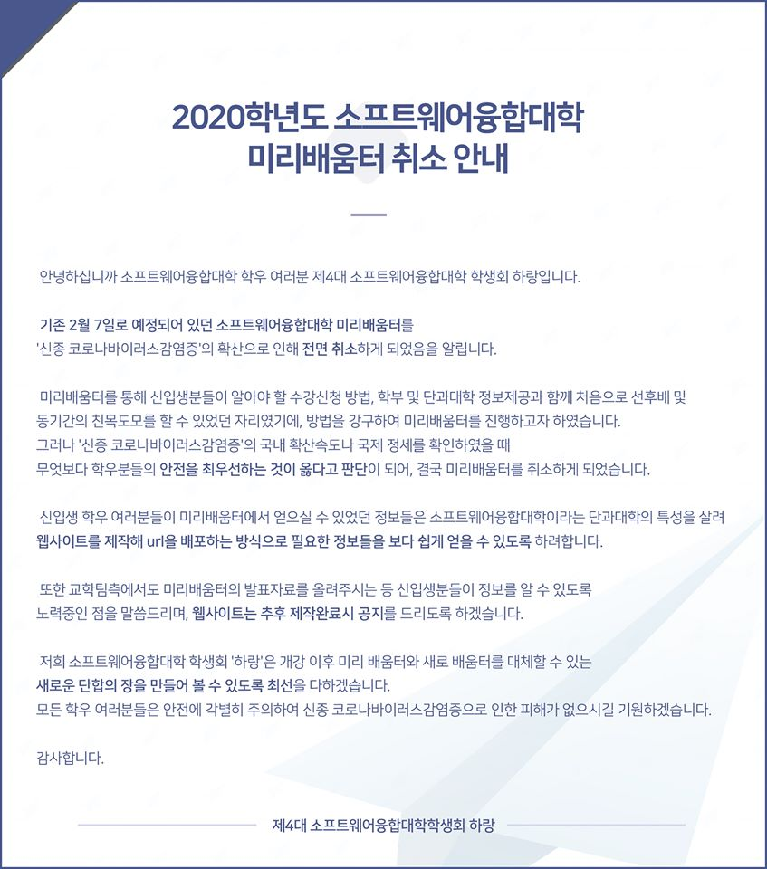

6. 미리배움터 취소 안내
[2020학년도 소프트웨어융합대학 미리배움터 취소 안내]

안녕하십니까 소프트웨어융합대학 학우 여러분 제4대 소프트웨어융합대학 학생회 하랑입니다.
기존 2월 7일로 예정되어 있던 소프트웨어융합대학 미리배움터를 '신종 코로나바이러스감염증'의 확산으로 인해 전면 취소하게 되었음을 알립니다.
미리배움터를 통해 신입생분들이 알아야 할 수강신청 방법, 학부 및 단과대학 정보제공과 함께 처음으로 선후배 및 동기간의 친목도모를 할 수 있었던 자리였기에, 방법을 강구하여 미리배움터를 진행하고자 하였습니다.
그러나 '신종 코로나바이러스감염증'의 국내 확산속도나 국제 정세를 확인하였을 때 무엇보다 학우분들의 안전을 최우선하는 것이 옳다고 판단이 되어, 결국 미리배움터를 취소하게 되었습니다.
신입생 학우 여러분들이 미리배움터에서 얻으실 수 있었던 정보들은 소프트웨어융합대학이라는 단과대학의 특성을 살려 웹사이트를 제작해 url을 배포하는 방식으로 필요한 정보들을 보다 쉽게 얻을 수 있도록 하려합니다.
또한 교학팀측에서도 미리배움터의 발표자료를 올려주시는 등 신입생분들이 정보를 알 수 있도록 노력중인 점을 말씀드리며, 웹사이트는 추후 제작완료시 공지를 드리도록 하겠습니다.
저희 소프트웨어융합대학 학생회 '하랑'은 개강 이후 미리 배움터와 새로 배움터를 대체할 수 있는 새로운 단합의 장을 만들어 볼 수 있도록 최선을 다하겠습니다.
모든 학우 여러분들은 안전에 각별히 주의하여 신종 코로나바이러스감염증으로 인한 피해가 없으시길 기원하겠습니다.
감사합니다.
제4대 소프트웨어융합대학학생회 하랑